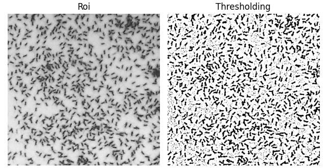
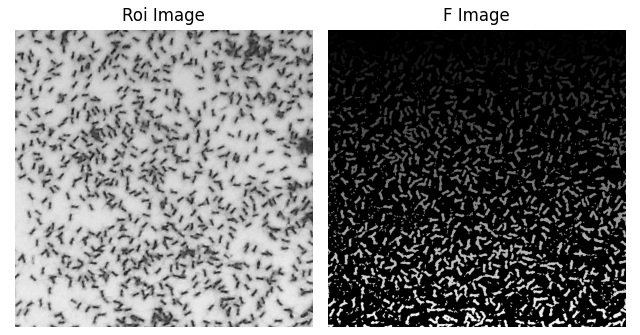
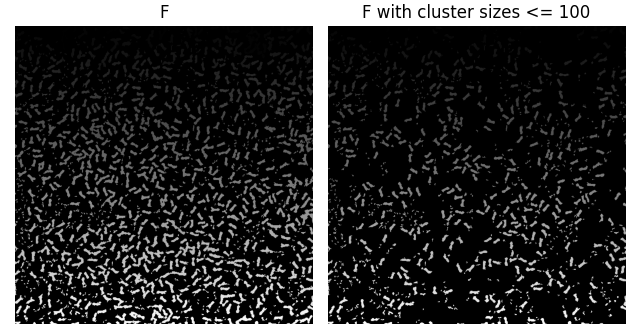

Cricket Detection and Clustering in Images
Executive Summary
- Objective: Automated detection and spatial clustering of insects (crickets) using computer vision and unsupervised machine learning techniques.
- Tools & Libraries: Python, OpenCV (Image Processing), Scikit-learn (DBSCAN), NumPy, Matplotlib, Unittest.
- Key Achievements: Developed a highly modular, Object-Oriented pipeline. Implemented adaptive thresholding to overcome uneven lighting, utilized density-based clustering to isolate targets, and integrated robust unit testing to ensure software reliability.
1. Image Pre-Processing & Feature Extraction
The first stage of the pipeline focuses on isolating the subjects from the background. Raw RGB images are loaded and converted to grayscale. To optimize computational cost and eliminate external background noise, a Region of Interest (ROI) is interactively cropped based on bounding box coordinates.
Due to the presence of varying lighting conditions and shadows within the test images, global thresholding methods proved insufficient. Therefore, an Adaptive Thresholding algorithm (Mean/Gaussian) was implemented via OpenCV. This method calculates the threshold for small regions of the image, providing superior robustness to illumination gradients. The resulting binary features are mapped into a spatial coordinate matrix $P$, representing the pixels of interest, as demonstrated in Figure 1.

2. Density-Based Spatial Clustering (DBSCAN)
To group the isolated pixels into individual distinct crickets, unsupervised machine learning was applied. The DBSCAN (Density-Based Spatial Clustering of Applications with Noise) algorithm from Scikit-learn was selected over traditional methods like K-Means.
The choice of DBSCAN is highly engineering-driven for this specific application: it groups together points that are closely packed together based on two parameters ($eps$ and $min\_samples$), without requiring a predefined number of clusters. This makes it exceptionally suited for spatial coordinate matrices where the exact number of targets (crickets) is unknown a priori. The resulting cluster map is shown in Figure 2.

3. Noise Filtering & Final Results
The raw clustering output inevitably contains artifacts due to residual background noise or physical anomalies in the image. A post-processing filtration logic was implemented to evaluate the pixel count (dimension) of each identified cluster.
By enforcing an upper limit parameter ($N$), any cluster exceeding the expected size of a cricket is classified as an artifact and mathematically excluded (values reset to $-1$ in the image array). The final output dynamically visualizes only the accurately clustered targets, successfully isolating the crickets from the background noise (Figure 3).

4. Software Engineering & OOP Architecture
Beyond the algorithmic workflow, the project emphasizes high-quality software engineering practices:
- Object-Oriented Design: The code is highly modular, utilizing custom classes (
CustomImshow,CustomSubplot,Point) to encapsulate plotting logic and 2D spatial coordinate management. - Robust Exception Handling: Dedicated custom exception classes (e.g.,
NotValidLengthErr,TooManyElementsErr) ensure strict validation of user inputs, bounding box limits, and array dimensions. - Unit Testing: The
unittestframework is deeply integrated into the data models to verify mathematical operations, variable getters/setters, and intentional raising of Type/Value errors, guaranteeing pipeline stability.